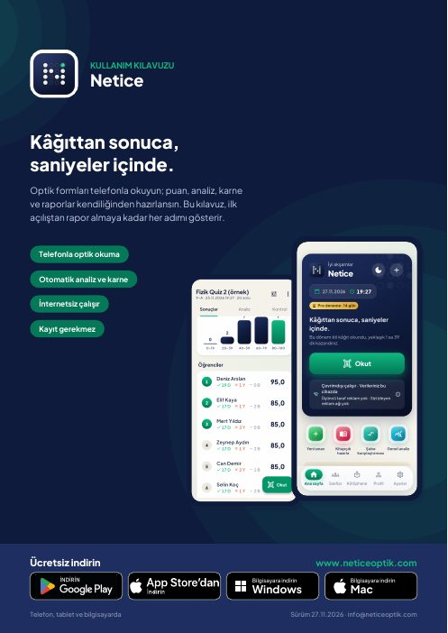
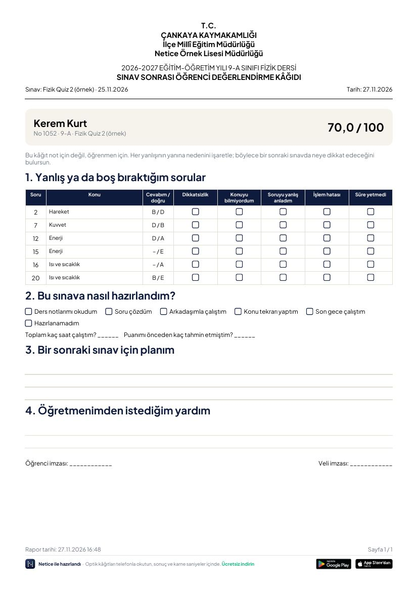
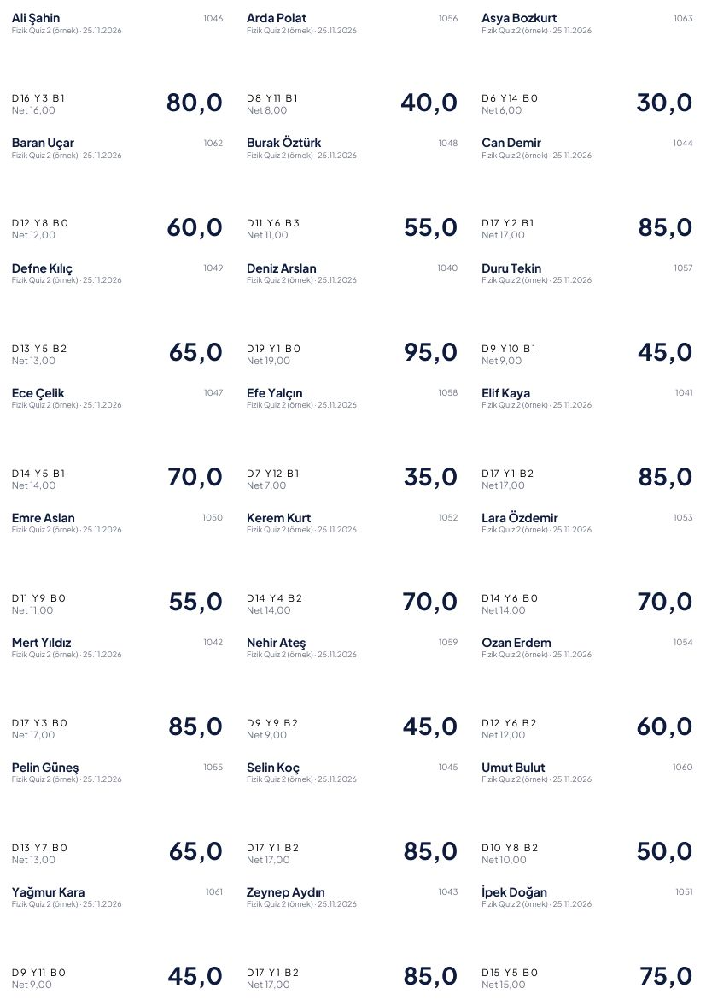
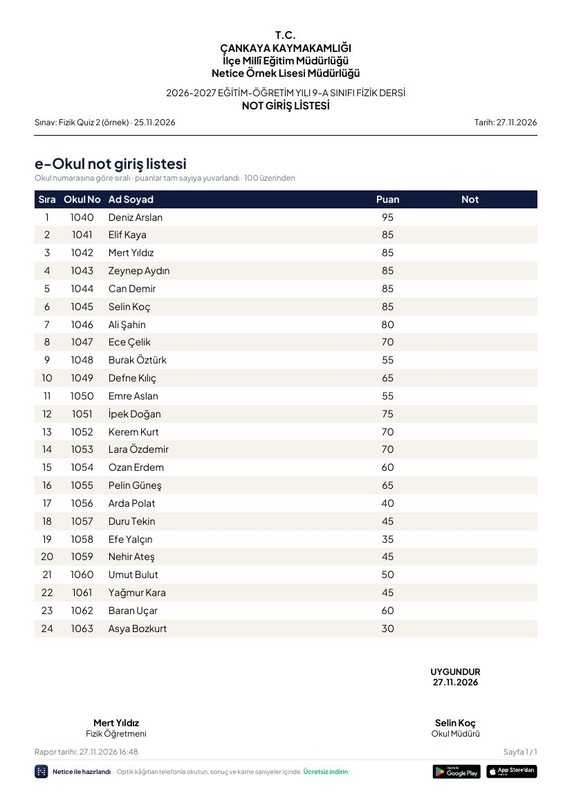
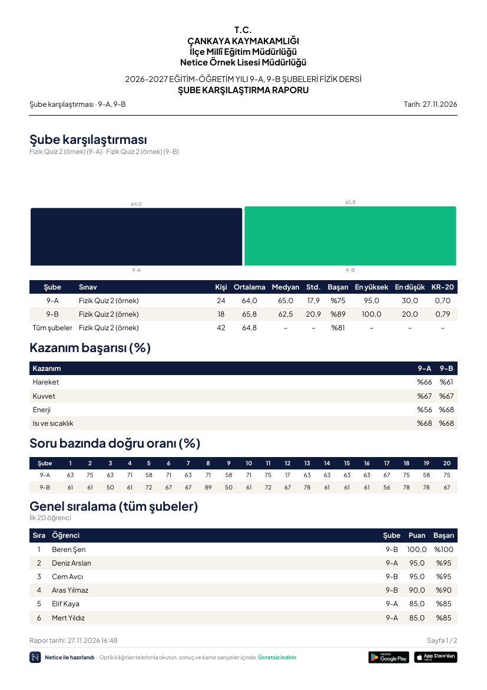

Kullanım kılavuzu ve Netice'nin hazırladığı tüm belgeler
Kullanım kılavuzunu PDF olarak indirin. Aşağıdaki 20 rapor, form ve kitapçığın hepsi uygulamanın kendisinde, örnek bir sınıfın verisiyle hazırlandı: tıklayıp büyütün, PDF olarak indirin ya da bağlantısını paylaşın.

Kullanım kılavuzu
Kurulumdan dönem karnesine kadar her adım, ekran görüntüleriyle. Yazdırıp öğretmenler odasına asabilir, meslektaşlarınızla paylaşabilirsiniz.
- 58 sayfa, renkli, A4
- 15 dilde: sayfanın dilini değiştirince kılavuz da o dilde iner
- Ücretsiz; kayıt gerekmez
Sınav sonuçları
Kâğıtlar okunur okunmaz hazır: sınıfın tablosu, her öğrencinin karnesi ve derse dönük çalışma kâğıtları.

Sınav raporu
Sınıf ortalaması, başarı dağılımı, soru soru madde analizi ve öğrenci sıralaması.

Öğrenci karnesi
Her öğrenciye bir sayfa: puanı, konu başarısı, gelişim notu ve çalışma önerisi.

Öğrenci değerlendirme kâğıdı
Öğrencinin kendi hatalarını inceleyip neden yanlış yaptığını yazdığı kâğıt.

Sonuç etiketleri
Kâğıtlara ya da deftere yapıştırılacak, puanlı küçük sonuç etiketleri.

e-Okul listesi
e-Okul'a not girerken yanınızda bulunacak, okul numarasına göre sıralı liste.
Sınıf ve kurum analizi
Şubeleri yan yana koyun, tüm okulun tablosunu tek sayfada görün.


Şube karşılaştırması
Aynı sınavı yapan şubelerin ortalama, başarı ve soru bazında karşılaştırması.
Dönem sonu ve yıl sonu
Dönemin bütün sınavları tek tıkla not çizelgesine, karneye ve devir dosyasına dönüşür.

Formlar ve kitapçıklar
Sınavdan önce: isimli optik formlar, cevap anahtarı ve soru bankasından hazır kitapçık.


İlkokul (çocuk dostu)
Küçük öğrenciler ve veliler için renkli, yıldızlı, kolay okunan raporlar.


Raporlarınız kendi sınıflarınızla hazırlansın
Örneklerdeki öğrenciler ve kurum adı gerçek değildir. Netice'yi indirip kâğıtları okutun; aynı raporlar sizin sınıflarınızın verisiyle saniyeler içinde hazır.